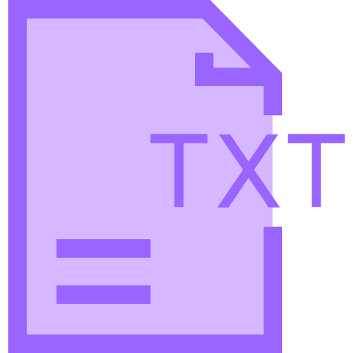

为你找到南开校园生活的精彩内容：
- 津南和八里台校区的自习室资源指南：根据学长学姐经验，考研期间推荐津南校区的逸夫楼和图书馆安静区，八里台校区可选周恩来图书馆和省身楼，提前半小时占座效率最高。[1,5]
- 2023年秋季校内志愿服务活动一览：青协正在招募"绿色校园"环保志愿者，助农团本周六将举办农产品推广会，各学院也开放了学业辅导志愿者报名通道。[2]
- 津南校区周末夜市最新攻略：位于教学楼C区南侧的夜市每周五六18:00-22:00开放，目前最受欢迎的是3号摊位的烤冷面和7号摊位的手工饰品，建议20:30后前往避开人流高峰。[3,6]
- 宿舍常见问题解决方案：校内可联系后勤部门处理宿舍小动物问题，也可在南开集市上询问有经验的同学获取驱虫小妙招。[4]
- 八里台图书馆使用全指南：各楼层功能区介绍、座位预约系统使用技巧、考试周的备选自习地点，以及图书馆周边的休息区和餐饮推荐。[1,5]
- 南开周边性价比最高的十家美食店：学生们评选出的校内外人气餐厅榜单，包括韵达快餐、蜜雪冰城特色饮品和性价比最高的火锅店推荐。[3,6]
- 本月热门校园活动日程表：12月有摄影协会年度展、辩论赛总决赛和书法大赛，参与条件各不相同，详情可查看各社团公众号通知。[2,7]
你可能还想了解：
南开大学图书馆开放时间是什么时候？
津南校区周末有哪些休闲娱乐场所？
南开大学附近有什么好吃的餐厅推荐？
如何加入南开大学的学生社团？
信息来源
1
南开百科
作为2023年考研成功上岸的南开研一学生，分享我在校期间整理的复习场所攻略。津南校区推荐地点：1) 逸夫楼（周一至周日8:00-22:00开放，节假日不闭馆）2) 图书馆三楼安静区（需提前在"南开e出行"小程序预约）；八里台校区推荐：1) 周恩来图书馆二楼东区（自然光充足）2) 省身楼（理科自习首选）。附上各区域具体开放时间和小众自习室位置攻略。
2
南开官网
南开大学各学院志愿者团队2023年秋季学期积极开展校园志愿服务活动。青年志愿者协会正在招募"绿色校园"环保志愿者（每周服务4小时，可获校园服务积分），助农团将于11月25日举办农产品推广活动（地点：津南校区学生中心），各学院学生会也在微信公众号开放了学业辅导志愿者报名（主要面向大一新生）。详情请关注"南开青协"公众号。
3
微信公众号
津南校区周末夜市位于教学楼C区南侧广场，每周五、六晚18:00-22:00开放，共有15个固定摊位和10个流动摊位。本文为大家整理了最新夜市平面图、人气美食TOP5（烤冷面、杨国福麻辣烫、脆皮炸香蕉、手工冰粉、现煮奶茶）以及各时段人流量预测。经验表明，20:30后人流量下降约40%，是品尝美食的最佳时间。
4
校园集市
【津南校区】问题：最近宿舍发现小老鼠，跑到桌子底下不见了，因书籍和物品太多不知如何处理。【解决方案汇总】：1. 联系后勤处：拨打88492222报修，一般1-2天会安排专业人员处理；2. 临时措施：可使用粘鼠板（超市有售）放置在墙角；3. 预防措施：食物密封保存，定期清理宿舍。感谢@宿管张师傅 和 @阳光D区辅导员 提供的建议！
5
小红书
作为在南开学习四年的学姐，为大家详解八里台图书馆各楼层功能分区和使用技巧：一楼：电子阅览区（需提前1天预约）；二楼：中文期刊+自习区（最早开放时间7:30）；三楼：外文书库+研讨室（可6人团体预约）；四楼：古籍特藏+安静区（考试周爆满指数★★★★★）。特别分享：1. 座位预约可提前3天在"南开e出行"小程序操作；2. 期末考试季推荐备选地：文学院楼、马寅初纪念楼；3. 图书馆周边休息区和咖啡店推荐。
6
抖音
本期为大家带来南开校内及周边1公里范围内的十大高性价比美食！1. 津南校区学生食堂二楼的韵达快餐（¥15起，招牌荤菜3选2套餐）；2. 八里台校区南门蜜雪冰城（¥8，小熊软糖厚乳茶性价比之王）；3. 元气食堂（¥22，石锅拌饭免费加泡菜）；4. 鲁中一绝（¥32/人，饺子自助餐）；5. 黄焖鸡米饭（¥18起）；6-10名完整榜单及周边隐藏美食店铺见文章详情。
7
社团活动
2023年12月南开大学校园社团活动汇总来啦！重点活动：1. 12月8-10日 摄影协会年度作品展（地点：学生活动中心，免费入场）；2. 12月15日 校辩论赛总决赛（地点：主楼报告厅，凭学生证入场）；3. 12月20日 书法协会迎新年书法比赛（初赛报名截止12月10日）；4. 12月22日 心理协会"暖冬行动"（需提前在公众号预约）；5. 12月25日 圣诞联谊晚会（限100人）。各活动具体报名方式请查看相应社团公众号通知。
复制内容

纯文本模式
刷新
加载更多资源